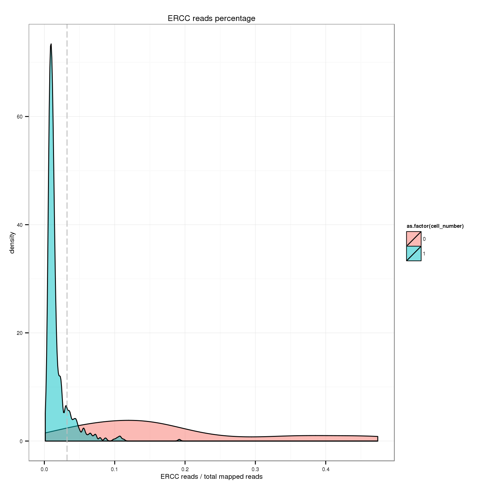
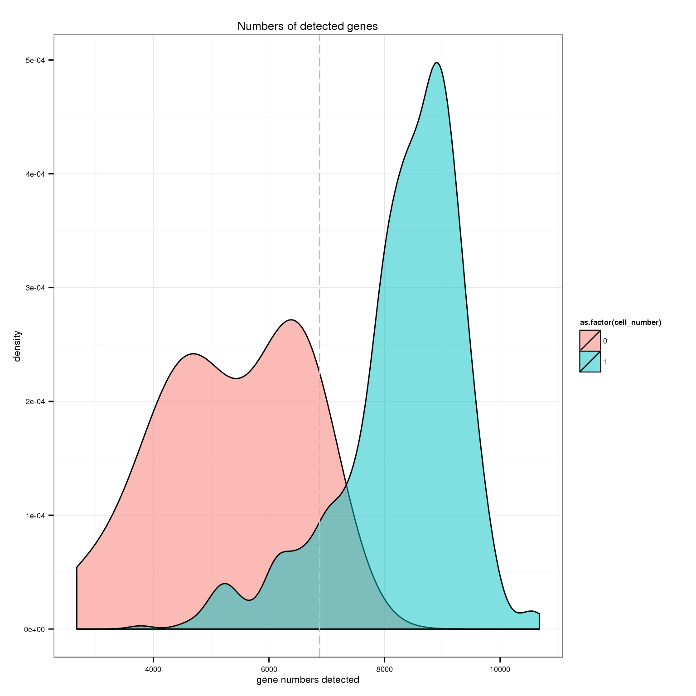

QC of single cell libraries
PoYuan Tung
2015-10-23
Last updated: 2015-10-26
Code version: 972bb96e0aaadb60cece679ebd7f25f961a30df5
Input
library("dplyr")
library("edgeR")
library("ggplot2")
library("cowplot")
theme_set(theme_bw(base_size = 16))
source("functions.R")Summary counts from featureCounts. Created with gather-summary-counts.py. These data were collected from the summary files of the full combined samples.
summary_counts <- read.table("../data/summary-counts.txt", header = TRUE,
stringsAsFactors = FALSE)Currently this file only contains data from sickle-trimmed reads, so the code below simply ensures this and then removes the column.
summary_per_sample <- summary_counts %>%
filter(sickle == "quality-trimmed") %>%
dplyr :: select(-sickle) %>%
arrange(individual, batch, well, rmdup) %>%
as.data.frame
summary_per_sample_single <- summary_per_sample[summary_per_sample$well != "bulk", ]Input annotation.
anno <- read.table("../data/annotation.txt", header = TRUE,
stringsAsFactors = FALSE)
head(anno) individual replicate well batch sample_id
1 NA19098 r1 A01 NA19098.r1 NA19098.r1.A01
2 NA19098 r1 A02 NA19098.r1 NA19098.r1.A02
3 NA19098 r1 A03 NA19098.r1 NA19098.r1.A03
4 NA19098 r1 A04 NA19098.r1 NA19098.r1.A04
5 NA19098 r1 A05 NA19098.r1 NA19098.r1.A05
6 NA19098 r1 A06 NA19098.r1 NA19098.r1.A06anno_single <- anno[anno$well != "bulk",]Input read counts.
reads <- read.table("../data/reads.txt", header = TRUE,
stringsAsFactors = FALSE)Input molecule counts.
molecules <- read.table("../data/molecules.txt", header = TRUE,
stringsAsFactors = FALSE)Input single cell observational quality control data.
qc <- read.table("../data/qc-ipsc.txt", header = TRUE,
stringsAsFactors = FALSE)
head(qc) individual batch well cell_number concentration tra1.60
1 19098 1 A01 1 1.734785 1
2 19098 1 A02 1 1.723038 1
3 19098 1 A03 1 1.512786 1
4 19098 1 A04 1 1.347492 1
5 19098 1 A05 1 2.313047 1
6 19098 1 A06 1 2.056803 1Total ERCC and removal of 19098.r2
Show the evidence that removing 19098 batch 2 is the first thing to do.
summary_per_sample_single_reads <- summary_per_sample_single[summary_per_sample_single$rmdup == "reads",]
summary_per_sample_single_reads$sample_id <- anno_single$sample_id
summary_per_sample_single_reads$batch_9 <- anno_single$batch
stopifnot(colnames(reads) == summary_per_sample_single_reads$sample_id )
summary_per_sample_single_reads$ERCC_reads <- apply(reads[grep("ERCC", rownames(reads)), ],2,sum)
summary_per_sample_single_reads$ERCC_molecules <- apply(reads[grep("ERCC", rownames(molecules)), ],2,sum)## create a color palette with one color per individual and different shades for repplicates
great_color <- c("#CC3300", "#FF9966", "#FFCC99", "#006633", "#009900", "#99FF99", "#3366FF", "#6699FF", "#66CCFF")
ercc_reads_plot <- ggplot(summary_per_sample_single_reads,
aes(x = factor(batch_9), y = ERCC_reads,
fill = factor(batch_9)), height = 600, width = 2000) +
geom_violin(alpha = .5) +
geom_boxplot(alpha = .01, width = .2, position = position_dodge(width = .9)) +
scale_fill_manual(values = great_color) +
labs(x = "batch", y = "ERCC reads", title = "Total ERCC read counts per cell") +
theme(axis.text.x = element_text(hjust=1, angle = 45))
ercc_molecule_plot <- ggplot(summary_per_sample_single_reads,
aes(x = factor(batch_9), y = ERCC_molecules,
fill = factor(batch_9)), height = 600, width = 2000) +
geom_violin(alpha = .5) +
geom_boxplot(alpha = .01, width = .2, position = position_dodge(width = .9)) +
scale_fill_manual(values = great_color) +
labs(x = "batch", y = "ERCC molecules", title = "Total ERCC molecule counts per cell") +
theme(axis.text.x = element_text(hjust=1, angle = 45))
theme_set(theme_bw(base_size = 8))
plot_grid(ercc_reads_plot + theme(legend.position = "none"),
ercc_molecule_plot + theme(legend.position = "none"),
labels = LETTERS[1:2])
Remove 19098r2 for all the following analysis
remove_19098r2 <- anno_single$batch != "NA19098.r2"
anno_single_rm <- anno_single[remove_19098r2,]
summary_per_sample_single_reads_rm <- summary_per_sample_single_reads[remove_19098r2,]
reads_rm <- reads[, remove_19098r2]
molecules_rm <- molecules[, remove_19098r2]
stopifnot(summary_per_sample_single_reads_rm$sample_id == colnames(reads_rm))Total mapped reads reads
## add cell number per well by merging qc file
summary_per_sample_reads_single_qc <- merge(summary_per_sample_single_reads_rm,qc,by=c("individual","batch","well"))
## calculate total mapped reads per sample
summary_per_sample_reads_single_qc$total_mapped <- apply(summary_per_sample_reads_single_qc[,5:8],1,sum)
## cut off
cut_off_reads <- quantile(summary_per_sample_reads_single_qc[summary_per_sample_reads_single_qc$cell_number == 0,"total_mapped"], 0.95)
cut_off_reads 95%
1581061 summary_per_sample_reads_single_qc$cut_off_reads <- summary_per_sample_reads_single_qc$total_mapped > cut_off_reads
## numbers of cells
sum(summary_per_sample_reads_single_qc[summary_per_sample_reads_single_qc$cell_number == 1, "total_mapped"] > cut_off_reads)[1] 601sum(summary_per_sample_reads_single_qc[summary_per_sample_reads_single_qc$cell_number == 1, "total_mapped"] <= cut_off_reads)[1] 98## density plots
ggplot(summary_per_sample_reads_single_qc[summary_per_sample_reads_single_qc$cell_number == 0 |
summary_per_sample_reads_single_qc$cell_number == 1 , ],
aes(x = total_mapped, fill = as.factor(cell_number))) +
geom_density(alpha = 0.5) +
geom_vline(xintercept = cut_off_reads, colour="grey", linetype = "longdash") +
labs(x = "total mapped reads", title = "Total mappred reads")
Unmapped ratios
## calculate unmapped ratios
summary_per_sample_reads_single_qc$unmapped_ratios <- summary_per_sample_reads_single_qc[,9]/apply(summary_per_sample_reads_single_qc[,5:13],1,sum)
## cut off
cut_off_unmapped <- quantile(summary_per_sample_reads_single_qc[summary_per_sample_reads_single_qc$cell_number == 0,"unmapped_ratios"], 0.05)
cut_off_unmapped 5%
0.3746674 summary_per_sample_reads_single_qc$cut_off_unmapped <- summary_per_sample_reads_single_qc$unmapped_ratios > cut_off_unmapped
## numbers of cells
sum(summary_per_sample_reads_single_qc[summary_per_sample_reads_single_qc$cell_number == 1, "unmapped_ratios"] > cut_off_unmapped)[1] 85sum(summary_per_sample_reads_single_qc[summary_per_sample_reads_single_qc$cell_number == 1, "unmapped_ratios"] <= cut_off_unmapped)[1] 614## density plots
ggplot(summary_per_sample_reads_single_qc[summary_per_sample_reads_single_qc$cell_number == 0 |
summary_per_sample_reads_single_qc$cell_number == 1 , ],
aes(x = unmapped_ratios, fill = as.factor(cell_number))) +
geom_density(alpha = 0.5) +
geom_vline(xintercept = cut_off_unmapped, colour="grey", linetype = "longdash") +
labs(x = "unmapped reads/ total reads", title = "Unmapped reads")
Total molecule counts
## calculate total gene molecule counts
summary_per_sample_reads_single_qc$total_gene_molecule <- colSums(molecules_rm[grep("ENSG", rownames(molecules_rm)),])
## look for outiers
ggplot(summary_per_sample_reads_single_qc, aes(x = concentration, y = total_gene_molecule / 10^3,
color = as.factor(cell_number))) +
geom_text(aes(label = cell_number)) +
labs(x = "Concentration", y = "", title = "Gene molecules (thousands)") +
scale_color_brewer(palette = "Dark2") +
theme(legend.position = "none")
outliers <- summary_per_sample_reads_single_qc %>% filter(cell_number == 1, concentration < 1.25, concentration > .15,
total_gene_molecule > 140000)
outliers %>% dplyr::select(sample_id) sample_id
1 NA19098.r3.B04
2 NA19098.r3.B11
3 NA19101.r1.B10
4 NA19101.r2.D07
5 NA19101.r3.C07
6 NA19101.r3.D08
7 NA19101.r3.D10
8 NA19101.r3.F05
9 NA19101.r3.F10
10 NA19239.r2.A12
11 NA19239.r2.B07ERCC percentage
## calculate ercc reads percentage
summary_per_sample_reads_single_qc$ercc_percentage <- apply(reads_rm[grep("ERCC", rownames(reads_rm)), ],2,sum)/apply(summary_per_sample_reads_single_qc[,5:8],1,sum)
## cut off
cut_off_ercc <- quantile(summary_per_sample_reads_single_qc[summary_per_sample_reads_single_qc$cell_number == 0,"ercc_percentage"], 0.05)
cut_off_ercc 5%
0.03223869 summary_per_sample_reads_single_qc$cut_off_ercc <- summary_per_sample_reads_single_qc$ercc_percentage > cut_off_ercc
## numbers of cells
sum(summary_per_sample_reads_single_qc[summary_per_sample_reads_single_qc$cell_number == 1, "ercc_percentage"] > cut_off_ercc)[1] 90sum(summary_per_sample_reads_single_qc[summary_per_sample_reads_single_qc$cell_number == 1, "ercc_percentage"] <= cut_off_ercc)[1] 609## density plots
ggplot(summary_per_sample_reads_single_qc[summary_per_sample_reads_single_qc$cell_number == 0 |
summary_per_sample_reads_single_qc$cell_number == 1 , ],
aes(x = ercc_percentage, fill = as.factor(cell_number))) +
geom_density(alpha = 0.5) +
geom_vline(xintercept = cut_off_ercc, colour="grey", linetype = "longdash") +
labs(x = "ERCC reads / total mapped reads", title = "ERCC reads percentage")
Mitochondrial genes
## endogenous genes
reads_rm_gene <- reads_rm[grep("ENSG", rownames(reads_rm)), ]
## create a list of mitochondrial genes (13 protein-coding genes)
## MT-ATP6, MT-CYB, MT-ND1, MT-ND4, MT-ND4L, MT-ND5, MT-ND6, MT-CO2, MT-CO1, MT-ND2, MT-ATP8, MT-CO3, MT-ND3
mtgene <- c("ENSG00000198899", "ENSG00000198727", "ENSG00000198888", "ENSG00000198886", "ENSG00000212907", "ENSG00000198786", "ENSG00000198695", "ENSG00000198712", "ENSG00000198804", "ENSG00000198763","ENSG00000228253", "ENSG00000198938", "ENSG00000198840")
## reads of mt genes in single cells
mt_reads <- reads_rm_gene[mtgene,]
dim(mt_reads)[1] 13 768stopifnot(colnames(reads_rm) == rownames(summary_per_sample_reads_single_qc$sample_id))
## mt ratio of single cell
summary_per_sample_reads_single_qc$mt_reads <- apply(mt_reads, 2, sum)
summary_per_sample_reads_single_qc$mt_reads_ratio <- summary_per_sample_reads_single_qc$mt_reads /summary_per_sample_reads_single_qc$total_mapped
## cut off
cut_off_mito <- quantile(summary_per_sample_reads_single_qc[summary_per_sample_reads_single_qc$cell_number == 0,"mt_reads_ratio"], 0.95)
cut_off_mito 95%
0.0856798 summary_per_sample_reads_single_qc$cut_off_mito <- summary_per_sample_reads_single_qc$mt_reads_ratio > cut_off_mito
## numbers of cells
sum(summary_per_sample_reads_single_qc[summary_per_sample_reads_single_qc$cell_number == 1, "mt_reads_ratio"] > cut_off_mito)[1] 141sum(summary_per_sample_reads_single_qc[summary_per_sample_reads_single_qc$cell_number == 1, "mt_reads_ratio"] <= cut_off_mito)[1] 558## density plots
ggplot(summary_per_sample_reads_single_qc[summary_per_sample_reads_single_qc$cell_number == 0 |
summary_per_sample_reads_single_qc$cell_number == 1 , ],
aes(x = mt_reads_ratio, fill = as.factor(cell_number))) +
geom_density(alpha = 0.5) +
geom_vline(xintercept = cut_off_mito, colour="grey", linetype = "longdash") +
labs(x = "mitochondrial gene reads / total reads", title = "Mitochondrial gene reads ratios")
Number of genes detected
## number of genes detected
summary_per_sample_reads_single_qc$gene_number <- colSums(reads_rm_gene >= 1)
## density plots
ggplot(summary_per_sample_reads_single_qc[summary_per_sample_reads_single_qc$cell_number == 0 |
summary_per_sample_reads_single_qc$cell_number == 1 , ],
aes(x = gene_number, fill = as.factor(cell_number))) +
geom_density(alpha = 0.5) +
labs(x = "gene numbers detected", title = "Numbers of detected genes")
Session information
sessionInfo()R version 3.2.0 (2015-04-16)
Platform: x86_64-unknown-linux-gnu (64-bit)
locale:
[1] LC_CTYPE=en_US.UTF-8 LC_NUMERIC=C
[3] LC_TIME=en_US.UTF-8 LC_COLLATE=en_US.UTF-8
[5] LC_MONETARY=en_US.UTF-8 LC_MESSAGES=en_US.UTF-8
[7] LC_PAPER=en_US.UTF-8 LC_NAME=C
[9] LC_ADDRESS=C LC_TELEPHONE=C
[11] LC_MEASUREMENT=en_US.UTF-8 LC_IDENTIFICATION=C
attached base packages:
[1] stats graphics grDevices utils datasets methods base
other attached packages:
[1] cowplot_0.3.1 ggplot2_1.0.1 edgeR_3.10.2 limma_3.24.9 dplyr_0.4.2
[6] knitr_1.10.5
loaded via a namespace (and not attached):
[1] Rcpp_0.12.0 magrittr_1.5 MASS_7.3-40
[4] munsell_0.4.2 colorspace_1.2-6 R6_2.1.1
[7] stringr_1.0.0 httr_0.6.1 plyr_1.8.3
[10] tools_3.2.0 parallel_3.2.0 grid_3.2.0
[13] gtable_0.1.2 DBI_0.3.1 htmltools_0.2.6
[16] lazyeval_0.1.10 yaml_2.1.13 assertthat_0.1
[19] digest_0.6.8 RColorBrewer_1.1-2 reshape2_1.4.1
[22] formatR_1.2 bitops_1.0-6 RCurl_1.95-4.6
[25] evaluate_0.7 rmarkdown_0.6.1 labeling_0.3
[28] stringi_0.4-1 scales_0.2.4 proto_0.3-10